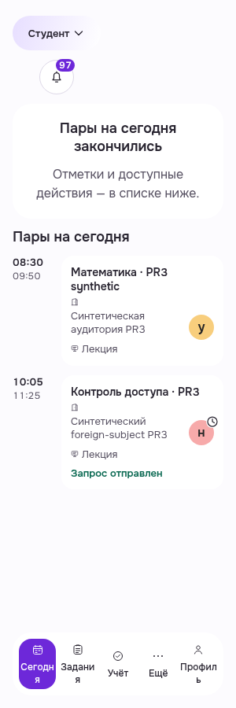
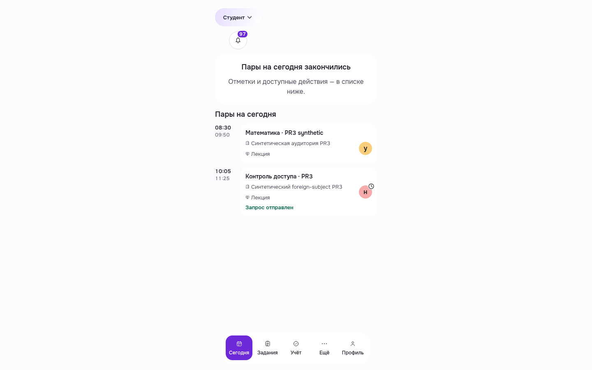
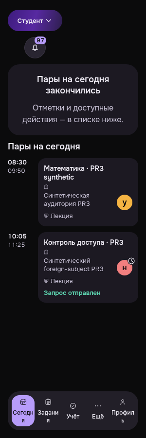
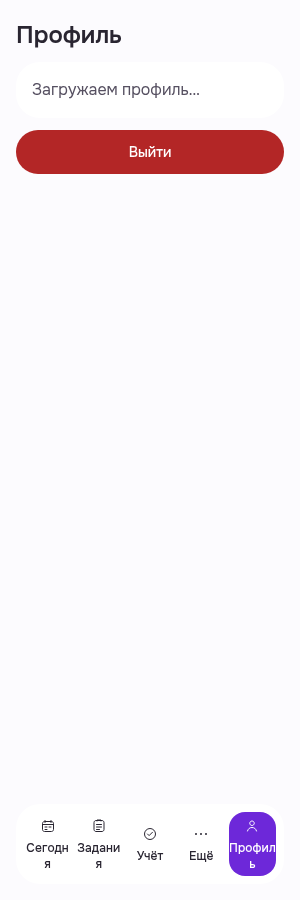

Controlled signed TMA: actual consumer slices
Source888667e32. One realAuth200 exchange for ownedactor4, real session/Today/profile API. ExistingpublicCI SDKhost/HMAC helper is explicitlysynthetic; controlledthemeChanged. No nativeTelegram/providerclaim.5 originalPNG personallyviewed; nativeownlogout204/guest401, browserclosed, no domain/prefwrites.
Today: day-ended/two realfixturelessons,3frames. Profile:1440light loadedoverview;300light naturalinitialloading only. Sharedbottomnav300 wraps finalletters, visualfinding retained.2controlledconsumer slices, not48fullyreadyTMA screens.
Qualifiedcriteria/limits · Manifest/hash/provenance · Navigationfindingpacket
Сегодня — завершившиеся пары · light · 300 · controlled signed TMA
TMA-CONTROLLED-SIGNED-MOBILE-TODAY__actual-baseline__light__300__888667e32
Реальные две пары и существующая заявка собственного fixture; день завершён. Команды отметки/заявки не выполнялись. SDK/host/initData и themeChanged синтетические; Auth/session/domain API настоящие. Native Telegram provider не проверен.

Сегодня — завершившиеся пары · light · 1440 · controlled signed TMA
TMA-CONTROLLED-SIGNED-MOBILE-TODAY__actual-baseline__light__1440__888667e32
Реальные две пары и существующая заявка собственного fixture; день завершён. Команды отметки/заявки не выполнялись. SDK/host/initData и themeChanged синтетические; Auth/session/domain API настоящие. Native Telegram provider не проверен.

Сегодня — завершившиеся пары · dark · 300 · controlled signed TMA
TMA-CONTROLLED-SIGNED-MOBILE-TODAY__actual-baseline__dark__300__888667e32
Реальные две пары и существующая заявка собственного fixture; день завершён. Команды отметки/заявки не выполнялись. SDK/host/initData и themeChanged синтетические; Auth/session/domain API настоящие. Native Telegram provider не проверен.

Профиль — естественная загрузка · light · 300 · controlled signed TMA
TMA-CONTROLLED-SIGNED-MOBILE-PROFILE__actual-baseline__light__300__888667e32
Первый кадр показывает нормальную незавершённую загрузку профиля; baseline загруженного профиля300 не подтверждён. SDK/host/initData и themeChanged синтетические; Auth/session/domain API настоящие. Native Telegram provider не проверен.

Профиль — реальный обзор · light · 1440 · controlled signed TMA
TMA-CONTROLLED-SIGNED-MOBILE-PROFILE__actual-baseline__light__1440__888667e32
Обзор реального собственного синтетического профиля: имя, роль, группа, меню; credential dialogs не открывались. SDK/host/initData и themeChanged синтетические; Auth/session/domain API настоящие. Native Telegram provider не проверен.